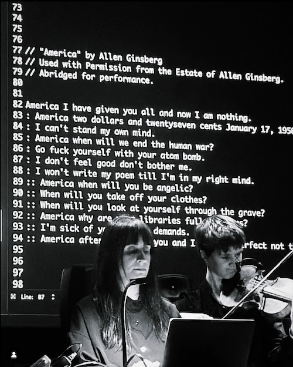
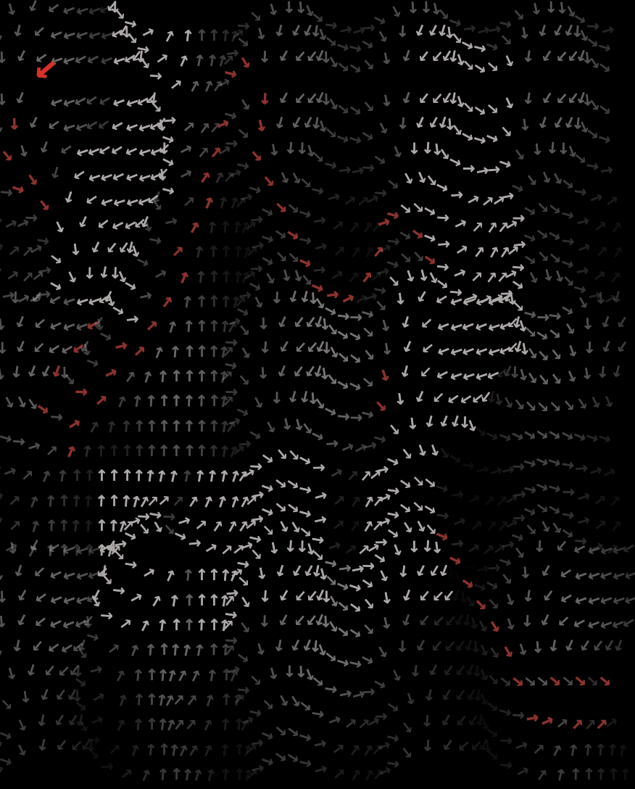

TONES is a composition and framework that explores the fundamental interpretation of emotions by both
machines and humans, delving into the interplay and cognitive conflict inherent in experiencing disparate emotions
simultaneously.
+ read more
The piece functions by way of a line of text which is reduced to two emotions, primary and secondary, by a
machine-learning algorithm. The system then outputs an associated musical phrase composed in advance by the composer
for each emotion: electroacoustic tones for the first emotion and musical notation for the second emotion. The musical
notation is interpreted once more by a live musician. The same approximate phrases are used in both performance types
to give each emotion a distinct musical identity.
The resulting chain of these interpretations, machine
to composer to musician, and their musical interaction together in variable forms and combinations is the groundwork
for this composition.
The resulting musical concept draws from through-composed and counterpoint techniques. Each line presents two new
musical phrases that may be harmonious, in direct conflict with each other, or simply coexist. It is expectedly atonal
during clashes on the emotional spectrum and at other times a surprising mesh of two emotions that resolve
harmoniously. Throughout performance, the composer controls the initial text entry and whether to isolate specific
musical phrases or regulate the timing of specific points for emphasis.
Photo: Live performance at Royal College of Music in Stockholm (Kungliga Musikhögskolan), 2024-05-06
In this performance I used
excerpts from Allen Ginsberg’s poem America and composed the electroacoustic musical phrases using samples from church
organ and persian santur. The musical notation was interpreted on violin by Tilde Edlund.
technical details: SuperCollider, python, OSC, JavaScript. (
code on github)

Flowfield - (WIP) An effect sequencer that uses flow fields made of perlin noise to create paths. Each path creates endless effect possiblities via a series of repeatable steps. Additional optional gravitational fields add color and randomness to each path. Unlike wave terrain synthesis, this modifies a signal, not a wave-form.
The initial idea for this came from socialogical concepts surrounding the way individuals behave in groups. I wanted to translate this using fluid dynamics for pushing an item around, and to do it in a way that made musical sense. The main characteristics of a flow field are that each point in the field has a direction and magnitude. Perlin noise is used for texture generation and has smooth gradients. Using these two concepts together it is possible to extract information from a field (grid) about both direction and texture intensity, giving interesting parameters for music. Additionally, I have extracted the direction of all surrounding cells from a given point, which gives data regarding how closely any given point follows its "group". And finally, I wanted to add elements of surprise by designating certain areas of grid cells to be "gravitational", meaning that the closer a path gets to them, the more effect they have. An example of a gravitational effect is to gradually draw out specific harmonics of a signal based on how close it is.
One constraint that I have worked with in this project is to make everything reproducable rather than rely solely on chance. I wanted to avoid purely stochastic results or data sonification, and instead create a tool where decisions can be made and fine-tuned at every step. The flow field and paths are reproducable and the path can be stepped through or left to run at an adjustable speed.
technical details: Max For Live, JavaScript, HTML/CSS
 TACEO NO. 1 FOR PIANO - Musique concrète composition for two pianos.
TACEO NO. 1 FOR PIANO - Musique concrète composition for two pianos.